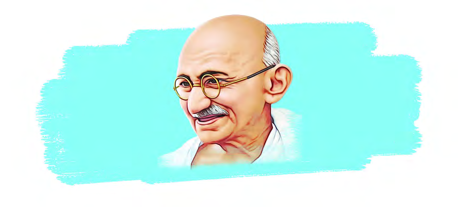
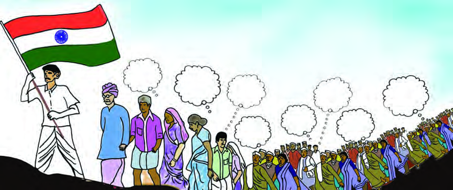

<!DOCTYPE html>
<html lang="en">
<head>
  <meta charset="utf-8">
  <meta name="viewport" content="width=device-width, initial-scale=1.0">
  <title>Pages 39-53 - Class 7 Social science</title>
  <style>

:root {
  --bg-color: #fcfcfd;
  --card-bg: #ffffff;
  --text-color: #1e293b;
  --text-muted: #64748b;
  --primary-color: #0284c7;
  --primary-light: #e0f2fe;
  --border-color: #e2e8f0;
  --radius: 10px;
  --shadow: 0 4px 6px -1px rgb(0 0 0 / 0.05), 0 2px 4px -2px rgb(0 0 0 / 0.05);
}

body {
  font-family: -apple-system, BlinkMacSystemFont, "Segoe UI", Roboto, "Noto Sans Malayalam", "Manjari", "Gayathri", sans-serif;
  background-color: var(--bg-color);
  color: var(--text-color);
  line-height: 1.8;
  font-size: 1.1rem;
  margin: 0;
  padding: 0;
}

.container {
  max-width: 860px;
  margin: 0 auto;
  padding: 2.5rem 1.5rem 5rem 1.5rem;
}

header {
  margin-bottom: 2.5rem;
  padding-bottom: 1.5rem;
  border-bottom: 2px solid var(--border-color);
}

.badge-row {
  display: flex;
  gap: 0.5rem;
  margin-bottom: 0.75rem;
  flex-wrap: wrap;
}

.badge {
  display: inline-block;
  font-size: 0.75rem;
  font-weight: 700;
  text-transform: uppercase;
  letter-spacing: 0.05em;
  padding: 0.25rem 0.65rem;
  border-radius: 9999px;
  background: var(--primary-light);
  color: var(--primary-color);
}

.badge-medium {
  background: #fef3c7;
  color: #b45309;
}

.badge-class {
  background: #dcfce7;
  color: #15803d;
}

h1 {
  font-size: 2.1rem;
  font-weight: 800;
  margin: 0.5rem 0 1rem 0;
  line-height: 1.3;
  color: #0f172a;
}

.nav-bar {
  display: flex;
  justify-content: space-between;
  margin: 1.5rem 0;
  font-size: 0.95rem;
  flex-wrap: wrap;
  gap: 0.5rem;
}

.nav-bar a {
  color: var(--primary-color);
  text-decoration: none;
  font-weight: 600;
  padding: 0.5rem 1rem;
  border-radius: var(--radius);
  background: var(--card-bg);
  border: 1px solid var(--border-color);
  transition: all 0.2s ease;
}

.nav-bar a:hover {
  background: var(--primary-light);
  border-color: var(--primary-color);
}

.nav-bar .disabled {
  color: var(--text-muted);
  pointer-events: none;
  border-color: transparent;
  background: transparent;
}

.page-section {
  background: var(--card-bg);
  border: 1px solid var(--border-color);
  border-radius: var(--radius);
  box-shadow: var(--shadow);
  padding: 2rem;
  margin-bottom: 2.5rem;
}

.page-header {
  display: flex;
  align-items: center;
  justify-content: space-between;
  margin-bottom: 1.25rem;
  padding-bottom: 0.5rem;
  border-bottom: 1px dashed var(--border-color);
}

.page-number {
  font-size: 0.8rem;
  font-weight: 700;
  text-transform: uppercase;
  color: var(--text-muted);
  letter-spacing: 0.05em;
}

.page-content p {
  margin: 0 0 1.25rem 0;
  white-space: pre-wrap;
  word-break: break-word;
}

.page-content p:last-child {
  margin-bottom: 0;
}

.diagram-card {
  margin: 2rem 0;
  text-align: center;
  background: #f8fafc;
  border: 1px solid var(--border-color);
  border-radius: var(--radius);
  padding: 1rem;
  overflow: hidden;
}

.diagram-card img {
  max-width: 100%;
  height: auto;
  border-radius: calc(var(--radius) - 4px);
  display: inline-block;
  box-shadow: 0 2px 4px rgba(0,0,0,0.04);
}

.diagram-card figcaption {
  font-size: 0.85rem;
  color: var(--text-muted);
  margin-top: 0.75rem;
  font-weight: 500;
}

footer {
  margin-top: 3rem;
  padding-top: 2rem;
  border-top: 2px solid var(--border-color);
}

  </style>
</head>
<body>
  <div class="container">
    <header>
      <div class="badge-row">
        <span class="badge badge-class">Class 7</span>
        <span class="badge badge-medium">English Medium</span>
        <span class="badge">Social science</span>
        <span class="badge">Part 1</span>
      </div>
      <h1>Pages 39-53</h1>
      <div class="nav-bar"><a href="part_1_pages_2538.html">← Pages 25-38</a><a href="index.html">☰ Index</a><a href="part_1_pages_5467.html">Pages 54-67 →</a></div>
    </header>
    <main>
<section class="page-section" id="page-39">
  <div class="page-header"><span class="page-number">Page 39</span></div>
  <figure class="diagram-card" id="fig_ch03_p039_01"><figcaption>Figure fig_ch03_p039_01 (Page 39)</figcaption></figure>
  <figure class="diagram-card" id="fig_ch03_p039_02"><figcaption>Figure fig_ch03_p039_02 (Page 39)</figcaption></figure>
  <div class="page-content">
    <p>“I shall strive for a constitution, which will release India from all thralldom and <br>patronage, and give her, ...in which the poorest shall feel that it is their country, <br>in whose making they have an effective voice; an India in which all communities <br>shall live in perfect harmony. There can be no room in such an India for the curse <br>of untouchability or the curse of intoxicating drinks and drugs. Women will enjoy <br>the same rights as men...<br>- Mahatma Gandhi<br>(“Young India”– 1931)<br>Have you read the above quote?<br>3<br>Fig. 3.1<br>Constitution: Path and Guiding Light</p>
  </div>
</section>
<section class="page-section" id="page-40">
  <div class="page-header"><span class="page-number">Page 40</span></div>
  <div class="page-content">
    <p>- Part 1<br>40<br>VII<br>Social Science<br>Was it after Independence that we started thinking about a constitution?<br>What ideas did Gandhiji wish to have in the future Constitution of India?<br>l Sovereignty<br>l Equality<br>l Fraternity<br>l Gender justice<br>l<br>l<br>Constitution: The Dream of Freedom Fighters<br>The First War of Independence in 1857 was the first mass movement against the <br>British rule. Soldiers, tribals, kings, feudal lords, peasants and many other groups <br>participated in the struggle. This movement helped the people to develop a sense of <br>nationalism based on religious harmony. The strengthening of nationalism led to the <br>formation of many regional organisations against foreign domination in different <br>parts of India. Indian Association, Madras Native Association and Pune Sarvajanik <br>Sabha are some examples. As distinct from such organisations of a regional nature, <br>a national organisation emerged in 1885 through the Indian National Congress. <br>With that, the anti-British agitations at the national level, achieved an organised <br>dimension. The main objectives of this movement were to bring the problems of <br>various groups of people in India to the attention of the British authorities and <br>to develop a sense of nationalism among the people beyond caste, religion and <br>regional thinking.<br>The main objectives of the freedom struggle was not only to end foreign rule but <br>also to ensure a better social and political life for every Indian. At each phase <br>of the struggle, the leadership had different views including moderate-extremist <br>nationalism. However, the nationalist movement proceeded by upholding some <br>basic ideas and values.<br>With the advent of Gandhi, the freedom movement transformed itself into a mass <br>movement. Gandhiji&#x27;s influence strengthened the demand for democracy based on <br>social justice. The leaders wished that the ideas and values of freedom, equality <br>based on social justice, brotherhood, and religious harmony put forward by the</p>
  </div>
</section>
<section class="page-section" id="page-41">
  <div class="page-header"><span class="page-number">Page 41</span></div>
  <figure class="diagram-card" id="fig_ch03_p041_01"><figcaption>Figure fig_ch03_p041_01 (Page 41)</figcaption></figure>
  <figure class="diagram-card" id="fig_ch03_p041_02"><figcaption>Figure fig_ch03_p041_02 (Page 41)</figcaption></figure>
  <div class="page-content">
    <p>41<br>Constitution: Path and Guiding Light<br>national movement, should be the foundation of our constitution. These views <br>influenced the framing of our constitution. <br>Observe the figure below and record your conclusions.<br>Fig. 3.2<br>Religious <br>harmony<br>Secularism<br>Equality<br>Freedom <br>for all<br>Brotherhood<br>Democracy<br>Welfare <br>state<br>Justice<br>l Individual freedom should be given priority.<br>l Civil rights must be ensured.<br>l All religions should be given equal importance.<br>l Social justice should be ensured.<br>l Democratic administration should be strengthened.<br>l<br>l	<br>Indian freedom struggle became the foundation of our constitution. <br>Evaluate.<br>Precursor to the Constitution<br>Didn&#x27;t we get freedom <br>on 15 August 1947? <br>But the Constitution <br>came into force on <br>26 January 1950.<br>&quot;Then what was India&#x27;s <br>constitution and law for <br>two and a half years after <br>independence?&quot;<br>Fig. 3.3</p>
  </div>
</section>
<section class="page-section" id="page-42">
  <div class="page-header"><span class="page-number">Page 42</span></div>
  <div class="page-content">
    <p>- Part 1<br>42<br>VII<br>Social Science<br>Don&#x27;t you have such a doubt? <br>What we followed was Government of India Act passed by the British in 1935 until <br>we became a Republic. Many ideas and provisions of our constitution were taken <br>from this act. Our Constitution came into force on 26 January 1950, replacing this <br>Act. <br>Find out the features of the Government of India Act (1935) by observing the <br>figure below.<br>Bicameral <br>Legislature in six <br>provinces<br>Bicameral <br>Legislature at the <br>centre<br>Power divided between <br>the Centre and the <br>Provinces<br>321 sections <br>and 10 schedules<br>Special <br>constituencies for <br>weaker sections, <br>women and <br>workers<br>The Constitution: Towards Framing<br>A code of laws for independent India was one of the main proposals of the Cabinet <br>Mission that visited India in 1946 to discuss the transfer of power. The Constituent <br>Assembly was formed with this objective.</p>
  </div>
</section>
<section class="page-section" id="page-43">
  <div class="page-header"><span class="page-number">Page 43</span></div>
  <figure class="diagram-card" id="fig_ch03_p043_01"><figcaption>Figure fig_ch03_p043_01 (Page 43)</figcaption></figure>
  <figure class="diagram-card" id="fig_ch03_p043_02"><figcaption>Figure fig_ch03_p043_02 (Page 43)</figcaption></figure>
  <div class="page-content">
    <p>43<br>Constitution: Path and Guiding Light<br>Constituent Assembly: Key Features<br>The elected <br>chairman <br>Dr. Rajendra<br> Prasad<br>Came into <br>effect on <br>26 January 1950 <br>(India became <br>Republic)<br>Chairman of <br>the Drafting <br>Committee,<br>Dr. B.R. <br>Ambedkar<br>Framing <br>period - 2 years<br>11 months <br>17 days<br>Constituent <br>Assembly<br>First Meeting <br>9 December<br>1946<br>Constitution <br>adopted and <br>signed on <br>26 November<br>1949<br>For an unblemished constitution...<br>The Constituent Assembly, which was entrusted to <br>frame our constitution had the desire that it should <br>be the best in the world. The chief architect of our <br>constitution, Dr. B.R. Ambedkar made a detailed <br>study of the constitutions of about sixty countries. <br>He intended to adopt the good aspects of other <br>countries&#x27; constitutions. While adopting the ideas <br>from foreign constitutions due consideration was <br>given to India&#x27;s diversity, historical tradition and <br>culture.<br>Dr. B.R. Ambedkar<br>Fig. 3.4</p>
  </div>
</section>
<section class="page-section" id="page-44">
  <div class="page-header"><span class="page-number">Page 44</span></div>
  <div class="page-content">
    <p>- Part 1<br>44<br>VII<br>Social Science<br>Diverse Features...<br>India has the largest written constitution in the world. Our Constitution, which <br>came into force on 26 January 1950 had 22 parts, 395 articles and 8 schedules.<br>What are the main features of our constitution?<br>Directions given to <br>the state to ensure social and <br>economic rights.<br>All citizens are subject <br>to the law. No one is above <br>the law.<br>Directive Principles<br>Right to vote given to all who <br>attained a particular age.<br>Universal Adult Franchise<br>Rule of Law<br>The Judicial System is <br>independent of the legislature <br>and executive.<br>Independent and <br>Impartial Judiciary<br>The legislature controls <br>the executive of the <br>country.<br>Parliamentary <br>Democracy<br>Each individual is guaranteed <br>certain fundamental rights by <br>the state.<br>Fundamental Rights<br>All the powers of the nation <br>originate from the people.<br>Popular Sovereignty<br>Responsibilities that every <br>individual owes to the nation <br>and society.<br>Fundamental Duties</p>
  </div>
</section>
<section class="page-section" id="page-45">
  <div class="page-header"><span class="page-number">Page 45</span></div>
  <figure class="diagram-card" id="fig_ch03_p045_01"><figcaption>Figure fig_ch03_p045_01 (Page 45)</figcaption></figure>
  <figure class="diagram-card" id="fig_ch03_p045_02"><figcaption>Figure fig_ch03_p045_02 (Page 45)</figcaption></figure>
  <div class="page-content">
    <p>45<br>Constitution: Path and Guiding Light<br>A system in which power is <br>divided between the Centre <br>and the States.<br>Federalism<br>There is only one citizenship in <br>the country; there is no separate <br>citizenship for states.<br>Single Citizenship<br>Organise a discussion based on the features of the Constitution.<br>Check the following statements. Draw <br> against the correct ones and <br> to the wrong ones<br>Our courts work under governments.<br>Certain powers are vested exclusively with the State governments.<br>Everyone who turns 18 has the right to vote.<br>No one is above the law.<br>A person in India has state citizenship in addition to national citizenship.<br>In democracy, the people are sovereign.<br>As we have rights, so we have duties too.<br>No one has control over our rulers.<br>Source of laws<br>Our Constitution is the fundamental law of the nation. Any law framed by Centre <br>or State Governments should follow the provisions of our Constitution. Thus, the <br>boundaries within which governments can make and enforce laws are decided by <br>our constitution which holds the position as the supreme system and source of law.</p>
  </div>
</section>
<section class="page-section" id="page-46">
  <div class="page-header"><span class="page-number">Page 46</span></div>
  <figure class="diagram-card" id="fig_ch03_p046_01"><figcaption>Figure fig_ch03_p046_01 (Page 46)</figcaption></figure>
  <div class="page-content">
    <p>- Part 1<br>46<br>VII<br>Social Science<br>Forest and Wildlife <br>Protection Act<br>Right to <br>Information Act<br>Disaster <br>Management Act<br>Labour <br>Law<br>Food <br>Security Act<br>Environment<br>Protection Act<br>Right to <br>Education Act<br>Child Labour <br>Prohibition Act<br>Juvenile <br>Justice Act<br>Prevention of <br>Corruption Act<br>National <br>Security Act<br>Land <br>Reforms Act<br>All the laws mentioned above are made in accordance with the Constitution.<br>List out the laws related to children&#x27;s rights mentioned in the collage.<br>l	 Child Labour Prohibition Act<br>l<br>l</p>
  </div>
</section>
<section class="page-section" id="page-47">
  <div class="page-header"><span class="page-number">Page 47</span></div>
  <figure class="diagram-card" id="fig_ch03_p047_01"><figcaption>Figure fig_ch03_p047_01 (Page 47)</figcaption></figure>
  <figure class="diagram-card" id="fig_ch03_p047_02"><figcaption>Figure fig_ch03_p047_02 (Page 47)</figcaption></figure>
  <div class="page-content">
    <p>47<br>Constitution: Path and Guiding Light<br>Why does our country give great importance to children&#x27;s rights? <br>Discuss.<br>Fig. 3.5 <br>Source: Kerala State Commission for Protection of Child Rights<br>The 1989 Convention on the Rights of the Child aims to prevent sexual violence <br>against children and to ensure appropriate punishment to the perpetrators. POCSO <br>2012 (Protection of Children from Sexual Offences Act 2012) is an act enacted to <br>implement the rights guaranteed by the Constitution of India incorporating child-<br>friendly measures without gender discrimination. The law considers all under the <br>age of 18 as child.<br>Have you heard of this law?<br>Every child has the right to live safely without fear in the society. A child must be <br>able to identify the uncomfortable and unsafe touches, looks, actions etc., from <br>any person. They should be capable enough to say &#x27;NO&#x27; to such acts, able to keep <br>away and complain to the authorities. The law states that cases of sexual assault <br>are to be reported (under Section 19) to the Special Juvenile Police Unit or the <br>local police. Officers handling POCSO cases are known as Child Welfare Police <br>Officers (CWPO).<br>The Kerala State Commission for Protection of Child Rights has set up a <br>monitoring system (POCSO Monitoring Cell) under Section 44 of the POCSO Act.</p>
  </div>
</section>
<section class="page-section" id="page-48">
  <div class="page-header"><span class="page-number">Page 48</span></div>
  <figure class="diagram-card" id="fig_ch03_p048_01"><figcaption>Figure fig_ch03_p048_01 (Page 48)</figcaption></figure>
  <div class="page-content">
    <p>- Part 1<br>48<br>VII<br>Social Science<br>The Act ensures severe punishment to any one who indulges in POCSO offences.<br>Organise a discussion and prepare an awareness pamphlet on the <br>topic &#x27;&#x27;detecting situations that may lead to crimes against children <br>and the preventive measures to avoid such crimes&quot;.<br>Functions of the Constitution<br>Apart from being the system and source of law, what other functions does the <br>Constitution perform?<br>It stands as the <br>fundamental document <br>that directs the <br>nation.<br>Defines the basic <br>values and ideals <br>of the nation.<br>Preserving <br>unity in <br>diversity.<br>Establishes the <br>rights and duties <br>of citizens.<br>Acts as safeguard <br>against tyranny <br>and abuse of power.<br>Defines and <br>delimits the powers<br>of the government.<br>Ensures that all the <br>administrative systems <br>of the country function <br>according to the <br>constitution.<br>Fig. 3.6</p>
  </div>
</section>
<section class="page-section" id="page-49">
  <div class="page-header"><span class="page-number">Page 49</span></div>
  <figure class="diagram-card" id="fig_ch03_p049_01"><figcaption>Figure fig_ch03_p049_01 (Page 49)</figcaption></figure>
  <figure class="diagram-card" id="fig_ch03_p049_02"><figcaption>Figure fig_ch03_p049_02 (Page 49)</figcaption></figure>
  <figure class="diagram-card" id="fig_ch03_p049_03"><figcaption>Figure fig_ch03_p049_03 (Page 49)</figcaption></figure>
  <figure class="diagram-card" id="fig_ch03_p049_04"><figcaption>Figure fig_ch03_p049_04 (Page 49)</figcaption></figure>
  <figure class="diagram-card" id="fig_ch03_p049_05"><figcaption>Figure fig_ch03_p049_05 (Page 49)</figcaption></figure>
  <figure class="diagram-card" id="fig_ch03_p049_06"><figcaption>Figure fig_ch03_p049_06 (Page 49)</figcaption></figure>
  <figure class="diagram-card" id="fig_ch03_p049_07"><figcaption>Figure fig_ch03_p049_07 (Page 49)</figcaption></figure>
  <figure class="diagram-card" id="fig_ch03_p049_08"><figcaption>Figure fig_ch03_p049_08 (Page 49)</figcaption></figure>
  <div class="page-content">
    <p>49<br>Constitution: Path and Guiding Light<br>Prepare Placards<br>3UHSDUHSODFDUGVIRUWKH5HSXEOLF&#x27;D\UDOO\ZLWKPHVVDJHVUHÀHFWLQJ<br>constitutional principles.<br>Constitution: Guardian <br>of Civil Rights<br>Fig. 3.7<br>ST-351-4-SOC. SCI. (E)-7-VOL-1</p>
  </div>
</section>
<section class="page-section" id="page-50">
  <div class="page-header"><span class="page-number">Page 50</span></div>
  <figure class="diagram-card" id="fig_ch03_p050_01"><figcaption>Figure fig_ch03_p050_01 (Page 50)</figcaption></figure>
  <figure class="diagram-card" id="fig_ch03_p050_02"><figcaption>Figure fig_ch03_p050_02 (Page 50)</figcaption></figure>
  <div class="page-content">
    <p>- Part 1<br>50<br>VII<br>Social Science<br>       Change and Set Right<br>Look at the figure and write the answers to the questions given below.<br>26 January 1950<br>The Constitution of India <br>came into force<br>1976 <br>Socialism, Secularism <br>and Integrity <br>were added<br>2002 <br>Education became a <br>Fundamental Right<br>2016<br>Goods and Services <br>Tax (GST) <br>Write about the <br>latest constitutional <br>amendment here.<br>1951 <br>The number of Schedules <br>increased to 9<br>Amendment<br>1<br>Amendment<br>42<br>1978<br>The Right to Property <br>is no longer a <br>Fundamental Right<br>Amendment<br>44<br>1992 <br>Panchayati <br>Raj-Municipal <br>Corporation Act<br>Amendment<br>73, 74<br>Amendment<br>86<br>Amendment<br>101<br>Amendment<br>............<br>Fig. 3.8</p>
  </div>
</section>
<section class="page-section" id="page-51">
  <div class="page-header"><span class="page-number">Page 51</span></div>
  <figure class="diagram-card" id="fig_ch03_p051_01"><figcaption>Figure fig_ch03_p051_01 (Page 51)</figcaption></figure>
  <figure class="diagram-card" id="fig_ch03_p051_02"><figcaption>Figure fig_ch03_p051_02 (Page 51)</figcaption></figure>
  <figure class="diagram-card" id="fig_ch03_p051_03"><figcaption>Figure fig_ch03_p051_03 (Page 51)</figcaption></figure>
  <div class="page-content">
    <p>51<br>Constitution: Path and Guiding Light<br>l	Which ideas were newly added to the Constitution in 1976, ?<br>l	In which year did the Constitution of India come into force?<br>l	What was the first amendment made in the constitution and in which year?<br>l	How long did the Right to Property remain a fundamental right in India?<br>l	Is Education a fundamental right in India? Since when?<br>l	How many times has the Indian Constitution been amended so far?<br>Our constitution changes from time to time. Constitutional Amendment is the <br>process of making changes in the constitution as per the changing social demands. <br>The constitution itself explains how amendments can be made. According to Article <br>368, Parliament has the power to amend the Constitution but the basic structure of <br>the Constitution should not be amended.<br>Do not shake the foundation!<br>In 1973, the Supreme Court ruled that no <br>change should be made to the basic structure of <br>the Constitution. This verdict was made in the <br>case filed by Kesavananda Bharati, the abbot <br>of Kasaragod Edneer Mutt, against the State of <br>Kerala.<br>Education: <br>A Fundamental Right<br>Education was made a fundamental <br>right <br>by <br>the <br>86th <br>constitutional <br>amendment in 2002. These provisions <br>were added in the Constitution as <br>Article 21(A). The &#x27;Right to Education <br>Act 2009&#x27; was enacted on 4 August <br>2009 as per this amendment. The <br>Act ensures free and compulsory <br>education to all children between <br>the age of 6 and 14 years.<br>Mini Constitution!<br>The terms secularism, socialism <br>and integrity were inserted in the <br>Preamble of the constitution through <br>the 42nd amendment of  1976. Some <br>other changes were also brought in the <br>constitution through this amendment. <br>Due to the significant changes brought <br>by this amendment, it was also called <br>the Mini Constitution.<br>Fig. 3.9</p>
  </div>
</section>
<section class="page-section" id="page-52">
  <div class="page-header"><span class="page-number">Page 52</span></div>
  <figure class="diagram-card" id="fig_ch03_p052_01"><figcaption>Figure fig_ch03_p052_01 (Page 52)</figcaption></figure>
  <figure class="diagram-card" id="fig_ch03_p052_02"><figcaption>Figure fig_ch03_p052_02 (Page 52)</figcaption></figure>
  <figure class="diagram-card" id="fig_ch03_p052_03"><figcaption>Figure fig_ch03_p052_03 (Page 52)</figcaption></figure>
  <div class="page-content">
    <p>- Part 1<br>52<br>VII<br>Social Science<br>Prepare a timeline using some important constitutional amendments.<br>When the Rules are Enforced <br>Land reform is yet <br>to materialize in the <br>country<br>Alcoholism cannot <br>be prevented by law <br>alone<br>Demand that Child <br>Right laws should be <br>strictly enforced<br>The Dowry <br>Prohibition Act is still <br>not a reality<br>What have you understood by reading the above headlines?<br>It indicates the various challenges while implementing laws.<br>What could be the reasons?<br>l Varied interests of people<br>l Legislations that does not fully reflect the will of the people<br>l Ignorance of law<br>l<br>We are a society with diverse interests. However, everyone is constitutionally <br>bound to obey the public laws. When new laws are formulated, criticisms and <br>struggles against them are likely to arise. It is natural in a democratic society. Such <br>objections should be approached constitutionally and democratically.</p>
  </div>
</section>
<section class="page-section" id="page-53">
  <div class="page-header"><span class="page-number">Page 53</span></div>
  <figure class="diagram-card" id="fig_ch03_p053_01"><figcaption>Figure fig_ch03_p053_01 (Page 53)</figcaption></figure>
  <div class="page-content">
    <p>53<br>Constitution: Path and Guiding Light<br>In our diverse and heterogeneous society, the values enshrined in the constitution <br>needs to be imbibed by India&#x27;s civil society to transform our country into a <br>Sovereign, Socialist, Secular and Democratic Republic.<br>Extended Activities<br>l	Collect news headlines and pictures related to laws and prepare a collage.<br>l	Organise a seminar based on &#x27;Features of Constitution&#x27;.<br>l	Prepare a constitution for your class based on the ideas in the Indian Constitution.<br>l	Organise an awareness programme on &#x27;Child Safety and POCSO Act&#x27; with the <br>help of legal experts.</p>
  </div>
</section>
    </main>
    <footer>
      <div class="nav-bar"><a href="part_1_pages_2538.html">← Pages 25-38</a><a href="index.html">☰ Index</a><a href="part_1_pages_5467.html">Pages 54-67 →</a></div>
    </footer>
  </div>
</body>
</html>
